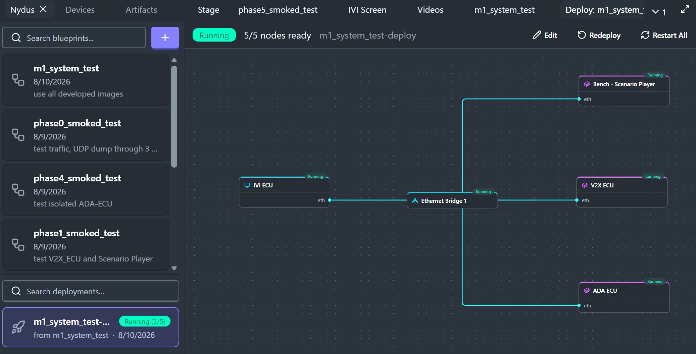
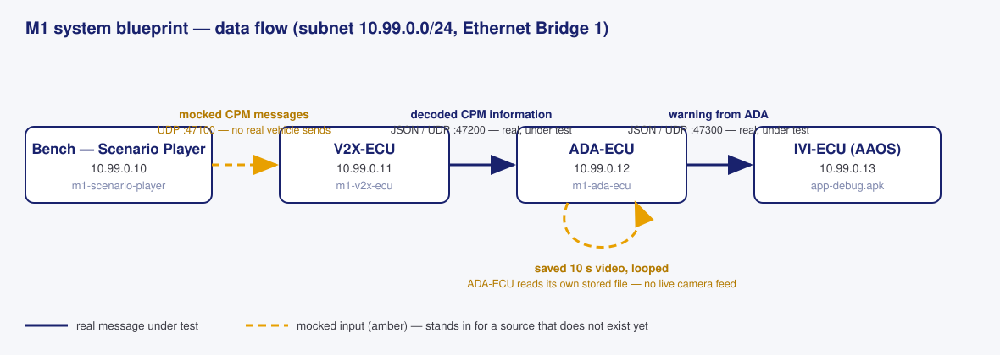
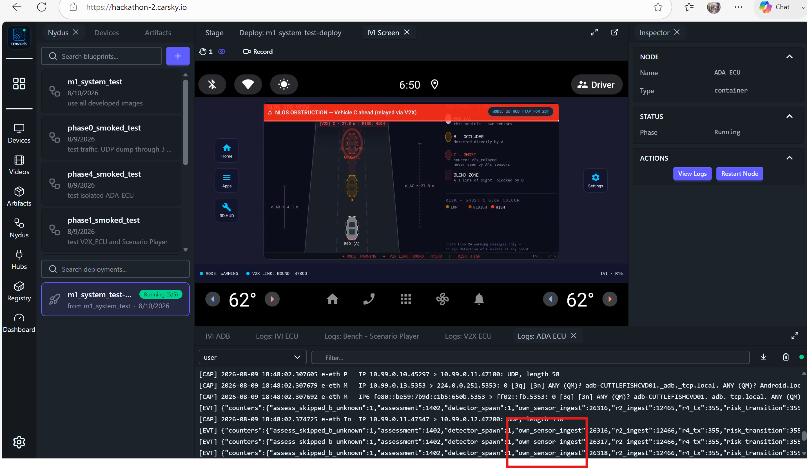
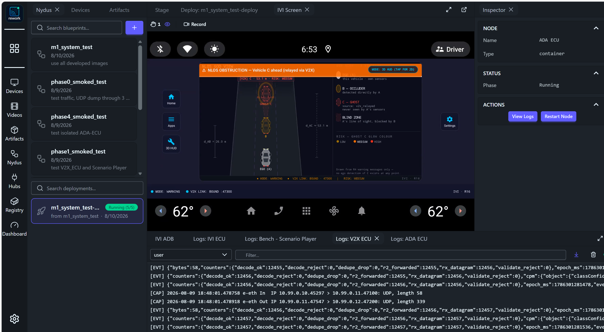
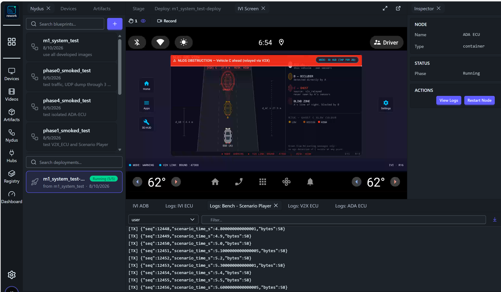
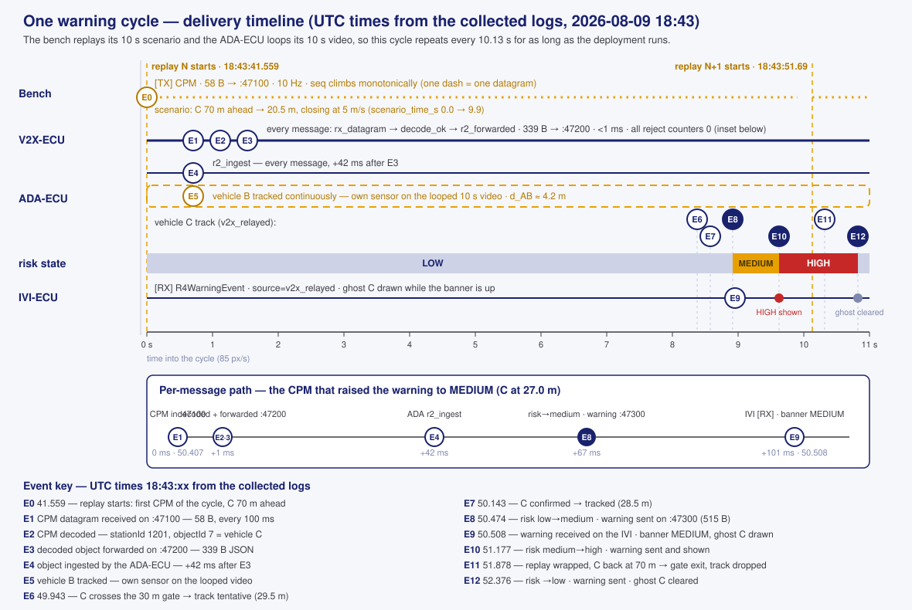

Milestone 1 · Team KIS — FPT Hackathon 2026
M1 System Delivery
Acceptance evidence for the Cooperative Awareness System
Lead: Pham Ngoc Minh · 2026-08-10 · Full report: system-delivery.md
§
Table of contents
01
Introduction
the mission, the team, and how the evidence folder reads
02
Design
the deployed blueprint, the nodes, and the data flow
03
Resources
platform baseline and third-party libraries
04
System test evidence
evidence types, tools, the four evidence items, and the delivery timeline
M1 System Delivery · Team KIS · FPT Hackathon 2026
01
Introduction
01
Mission and Milestone 1 scope
- Vehicle A cannot see vehicle C — its line of sight is blocked by vehicle B, directly in front, in the same lane.
- B's perception of C reaches A over a V2X relay; A renders ghost C from the relayed data alone.
- Milestone 1 builds only vehicle A, entirely on the CarSky cloud platform; B and C are simulated by the bench.
- Definition of done: one continuous run, zero direct C detections on A, ghost C rendered from
v2x_relayedonly.
M1 System Delivery · Team KIS · FPT Hackathon 2026
01
Team and report identity
| Field | Value |
|---|---|
| Team ID | KIS |
| Lead | Pham Ngoc Minh — mnpham1986@gmail.com |
| Solution name | Cooperative Awareness System |
| Reported version | Milestone 1 |
| Evidence folder | documents/Delivery/Acceptance/ |
- System evidence is reported in the delivery page — system-delivery.md, this deck's full version.
- Reproduction guides — Test-Guides: APK deploy, test runs, log and pcap collection.
M1 System Delivery · Team KIS · FPT Hackathon 2026
02
Design
02
The deployed blueprint
A complete five-node blueprint — three ECUs, the Scenario Player bench, and the Ethernet bridge. The bench generates V2X messages as if received from another vehicle in the same lane, directly in front.

The m1_system_test deployment Running 5/5 on the CarSky canvas
M1 System Delivery · Team KIS · FPT Hackathon 2026
02
Node responsibilities
| Node | Responsibility | Input → Output |
|---|---|---|
| Bench — Scenario Player | Plays the scenario describing vehicle C | scenario file → mocked CPM messages (:47100) |
| V2X-ECU | Decodes, validates, dedupes, forwards | CPM messages → decoded CPM information (:47200) |
| ADA-ECU | Fuses relay + own-sensor B, assesses risk | decoded CPM + looped saved video → warning (:47300) |
| IVI-ECU | Renders the driver warning | warning from ADA → warning screen |
- Design authorities: System Design · Module Design per node.
M1 System Delivery · Team KIS · FPT Hackathon 2026
02
Data flow and mocked inputs

Data flow: amber mocked CPM and video-loop arrows, navy real message arrows
- Amber, dashed — mocked: no vehicle sends the CPM messages; no live camera exists — the ADA-ECU loops a saved 10 s video stored in its own image.
- Navy, solid — real messages under test: V2X-ECU → ADA-ECU and ADA-ECU → IVI-ECU.
M1 System Delivery · Team KIS · FPT Hackathon 2026
03
Resources
03
Baseline resources
| Resource | What it is |
|---|---|
| KIS device | The team's entry in the Devices panel; hosts the deployment-bound widgets |
| IVI Screen widget | Live AAOS framebuffer — the warning-screen evidence surface, with recording |
| IVI ADB widget | The Local ADB tunnel for APK install and logcat collection |
| AAOS image | Starter-pack ANDROID_IMAGE artifact, 0.0.1, aarch64 — the IVI guest |
| Skycraft node | VM node type running the AAOS guest (IVI-ECU) |
| Container node | Container node type running the registry images (bench, V2X, ADA) |
| Ethernet bridge | eth-bridge, subnet 10.99.0.0/24 — every node's pin, one star |
M1 System Delivery · Team KIS · FPT Hackathon 2026
03
Libraries — bench and V2X-ECU
| Node | Library | License | Usage |
|---|---|---|---|
| Scenario Player | PyYAML 6.0.2 | MIT | Scenario YAML loading |
| Scenario Player | Vanetza ITS2 v26.06 | LGPLv3 (dynamic) | UPER encode of the CPM |
| Scenario Player | nlohmann/json 3.11.3 | MIT | Codec-seam JSON |
| Scenario Player | pytest · jsonschema | MIT | Tests, schema validation |
| V2X-ECU | Vanetza ITS2 v26.06 | LGPLv3 (dynamic) | UPER decode of inbound CPM |
| V2X-ECU | nlohmann/json 3.11.3 | MIT | Outbound JSON, [EVT] lines |
| V2X-ECU | Boost (via Vanetza) | BSL-1.0 | Vanetza runtime |
| V2X-ECU | GoogleTest 1.14.0 | BSD-3-Clause | Unit tests |
| V2X-ECU | tcpdump | BSD | In-container capture |
M1 System Delivery · Team KIS · FPT Hackathon 2026
03
Libraries — ADA-ECU and IVI-ECU
| Node | Library | License | Usage |
|---|---|---|---|
| ADA-ECU | nlohmann/json 3.11.3 | MIT | Contract bindings in/out |
| ADA-ECU | ONNX Runtime 1.28.0 | MIT | YOLO11n inference |
| ADA-ECU | YOLO11n (Ultralytics export) | AGPL-3.0 | Detection model |
| ADA-ECU | opencv-python-headless | Apache-2.0 | Saved-clip frame decode |
| ADA-ECU | numpy · GoogleTest · pytest · tcpdump | BSD / MIT | Math, tests, capture |
| IVI-ECU | Jetpack Compose + Material3 | Apache-2.0 | HMI layout, God View canvas |
| IVI-ECU | kotlinx.serialization · coroutines | Apache-2.0 | Warning parsing, receive loop |
| IVI-ECU | Dagger Hilt 2.58 · AndroidX Lifecycle | Apache-2.0 | DI, ViewModel/service glue |
| IVI-ECU | JUnit4 · Robolectric · MockK · Turbine | EPL / Apache / MIT | Unit tests |
M1 System Delivery · Team KIS · FPT Hackathon 2026
04
System test evidence
04
Types of evidence and tools
| Type | What it proves |
|---|---|
| Warning screen | The driver-facing rendering happened |
| Internal log | Each node produced and consumed what it should |
| Wireshark capture | What crossed the wire, byte-exact — exported from the V2X/ADA logs |
| Tool | Purpose |
|---|---|
INSTALL-IVI-APK.cmd | Install the APK, own the ADB tunnel |
COLLECT-LOGS.cmd | Collect every node log + guest logcat, check against expected results |
EXTRACT-PCAP.cmd · capture.sh | Export and produce the Wireshark captures |
check_v2x_log.py · adb logcat | Assert the V2X chain · read the app's [RX] lines |
Procedures: Test-Guides README — it links every guide.
M1 System Delivery · Team KIS · FPT Hackathon 2026
04
Expected evidence per node
| Node | Warning screen | Internal log | Wireshark capture |
|---|---|---|---|
| Bench — Scenario Player | — | [TX] lines only | — |
| V2X-ECU | — | [EVT] decode/forward counters | CPM in :47100, object out :47200 |
| ADA-ECU | — | [EVT] fusion/risk counters | Object in :47200, warning out :47300 |
| IVI-ECU | God View with ghost C | [RX] lines in the app logcat | — |
- The two captures fit the expected call flow — each hop appears on the wire exactly where the design says it should.
M1 System Delivery · Team KIS · FPT Hackathon 2026
04
Evidence 1 — Warning screen and IVI log

The NLOS God View warning with the IVI logcat and riskState transitions highlighted
- Banner NLOS OBSTRUCTION — Vehicle C ahead (relayed via V2X); C dashed as a ghost,
source: v2x_relayed — never seen by A's sensors. - Logcat:
[RX] R4WarningEvent(…)with riskState low → medium → high.
M1 System Delivery · Team KIS · FPT Hackathon 2026
04
Evidence 2 — ADA-ECU internal log

The ADA ECU log with the own_sensor_ingest counter highlighted
own_sensor_ingest(highlighted) counts vehicle B detections from the ADA-ECU's own sensor path — besider2_ingest, the relayed CPM information.- The ADA-ECU loops its 10 s saved video to keep B detected for the demo — no live camera.
M1 System Delivery · Team KIS · FPT Hackathon 2026
04
Evidence 3 — V2X-ECU log

The V2X ECU log with decode counters climbing and CAP wire lines
- Counters climb in lockstep:
rx_datagram→decode_ok→r2_forwarded; every reject counter stays 0. [CAP]shows both wire sides: CPM in on:47100(58 B), decoded object out on:47200(339 B).
M1 System Delivery · Team KIS · FPT Hackathon 2026
04
Evidence 4 — Bench log

The bench log with climbing TX sequence numbers and scenario time
[TX]lines:seqclimbs monotonically,scenario_time_sadvances through the 10 s scenario.- The bench resends the scenario cyclically, so the demo stream runs continuously — the only mocked wire source.
M1 System Delivery · Team KIS · FPT Hackathon 2026
04
The delivery timeline — one warning cycle

One 10.13 s warning cycle: bench CPM stream, V2X decode, ADA tracks for B and C, risk ribbon, IVI warnings, per-message latency inset
- The bench replays its 10 s scenario and the ADA-ECU loops its 10 s video → the cycle repeats every 10.13 s. Full event table: system-delivery.md.
M1 System Delivery · Team KIS · FPT Hackathon 2026
04
Timeline events and measured latencies
| Event | Δ cycle | Path | Measured | |
|---|---|---|---|---|
| E0 replay starts — C 70 m ahead | 0.00 s | CPM decode + forward (E1→E3) | < 1 ms | |
| E6 C crosses the 30 m gate → tentative | 8.38 s | V2X → ADA ingest (E3→E4) | 42 ms | |
E7 C confirmed tracked (v2x_relayed) | 8.58 s | CPM arrival → warning sent (E1→E8) | 67 ms | |
E8 risk low→medium · warning → :47300 | 8.92 s | CPM arrival → IVI [RX] (E1→E9) | 101 ms | |
| E9 warning on the IVI — ghost C drawn | 8.95 s | replay start → first warning (E0→E9) | 8.95 s | |
| E10 risk high · E12 reset, ghost cleared | 9.62 · 10.82 s | cycle period | 10.13 s |
- Vehicle B is tracked continuously from the own-sensor path on the looped video (
d_AB ≈ 4.2 m) — it never needs a gate event.
M1 System Delivery · Team KIS · FPT Hackathon 2026
04
Log time and the demo video
| Surface | Timestamp | Domain |
|---|---|---|
[EVT] lines (V2X, ADA) | epoch_ms · mono_ms | Unix ms UTC · monotonic |
[CAP] lines (V2X, ADA) | 18:43:50.407 | UTC wall clock (tcpdump) |
IVI logcat [RX] | 08-09 18:43:50.508 | guest clock, UTC, within ~35 ms |
Bench [TX] | seq + scenario_time_s only | replay position — wall clock taken at the V2X-ECU |
- The demo video (
video-evidence/system-test.mp4, 3 min 23 s) is a different run of the same deployment and scenario — clocks differ, the cycle does not: ≈ 20 repetitions of E0–E12. - Watch per cycle: banner MEDIUM ~8.9 s after replay start → HIGH +0.7 s → cleared +1.2 s at the wrap; ghost C carries
source: v2x_relayedthroughout.
M1 System Delivery · Team KIS · FPT Hackathon 2026
Thank you
Team KIS · Cooperative Awareness System · full report: system-delivery.md